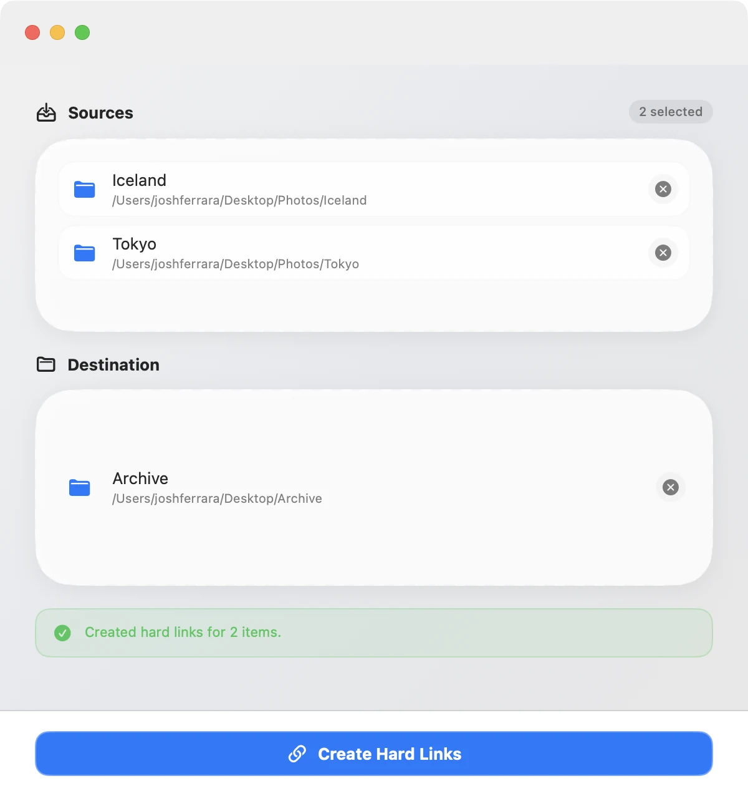
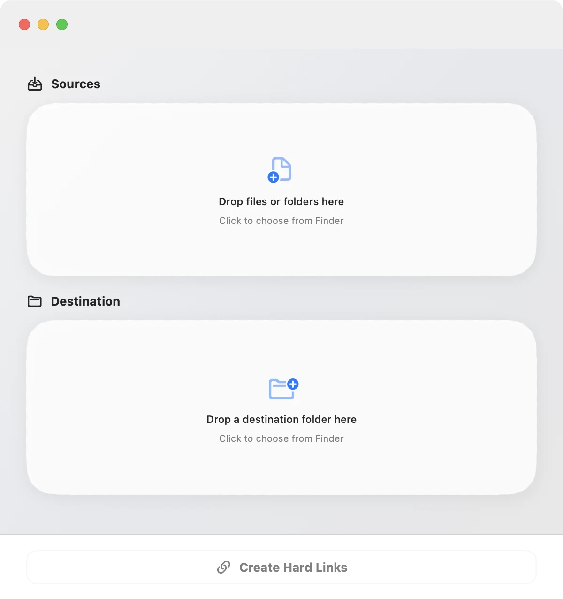

Copy anything.
Duplicate nothing.
Hard Linker creates hard-linked copies of files and folders with drag & drop. The copy lives anywhere you want it — and takes up no extra disk space, because on disk it's the same data.
v1.0.9 · macOS 13+ · Universal · Free & open source

$ cp -al source destination
That command is the whole trick — and it's all Hard Linker runs. No daemons, no database, no proprietary format. Just the battle-tested Unix tool, wrapped in a native interface that checks your inputs before anything touches the disk.
One file. Two addresses.
A hard link is a second name for the same data on disk. Both paths open the same file — not a copy, not a shortcut that breaks when things move.
Link a 100 GB folder into another location and it finishes in seconds, using almost zero additional space. Delete one path later and nothing is lost — the data stays alive as long as any name still points to it.
It's how power users seed torrents into a Plex library without doubling storage, stage backups, and keep one photo archive organized three different ways.
Three moves. Done.
-
Drop your sources
Drag any mix of files and folders in from Finder, or click to pick them. Add as many as you like.
-
Choose a destination
One folder, anywhere on the same volume. Each source keeps its own name inside it.
-
Create hard links
Hard Linker validates everything first, runs
cp -al, and confirms the result.

Small app. Careful engineering.
Hard links are sharp tools — pointing them at the wrong place is how files get clobbered. Most of Hard Linker's code exists to make sure that never happens.
Preflight validation
Duplicate target names, already-existing files, missing sources, and recursive
destinations (linking a folder into itself) are all caught before cp ever runs.
Many sources, one pass
Queue up any number of files and folders and link them into a destination in a single operation, with per-item results.
True hard links
Real directory entries pointing at the same data — not symlinks or aliases that break when the original moves or disappears.
Native through and through
Built with SwiftUI for macOS 13 and later. Light and dark mode, drag & drop, a universal binary for Apple silicon and Intel.
Quiet auto-updates
Signed, notarized releases delivered through Sparkle. Check for updates from the app menu; new versions install themselves.
Free & open source
The entire app is a readable Swift package on GitHub — audit what touches your files, or build it yourself.
Hard links, honestly.
Same volume only
Hard links can't cross drives or partitions — that's a filesystem rule, not an app limitation. Both paths need to live on the same volume.
Folders are rebuilt, files are linked
macOS doesn't hard-link directories, so Hard Linker recreates the folder structure and links every file inside — which is exactly what you want.
It's the same file
Edit the data through either path and both reflect it. Deleting one path never deletes the data — it survives until the last link is gone.
Stop paying for the same bytes twice.
Download Hard Linker and make your next copy free.